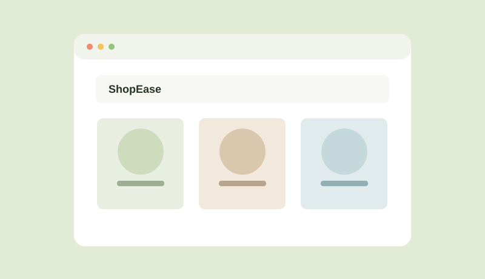

OPEN TO INTERNSHIP OPPORTUNITIES
Curious mind.
Thoughtful code.
Hi, I’m Subin V — an aspiring web developer learning to turn ideas into useful, easy-to-use web experiences.
Building
with purpose
with purpose
HTML · CSS · JS
Always learning
A LITTLE ABOUT ME ↘
Always learning
FRONTEND DEVELOPMENT✳CREATIVE PROBLEM SOLVING✳ACCESSIBLE DESIGN✳CONTINUOUS LEARNING✳FRONTEND DEVELOPMENT✳CREATIVE PROBLEM SOLVING✳ACCESSIBLE DESIGN✳
01 — A LITTLE INTRODUCTION
Creating things
that make sense.
I’m a B.Tech student in Artificial Intelligence and Data Science, interested in building clear and useful web experiences.
I’m developing my frontend skills through coursework, guided learning, and hands-on projects. I enjoy learning how websites work and improving the details that make them easy to use.
MY CAREER OBJECTIVE
To begin my career as a web developer intern, contribute to real projects, and grow my skills with a collaborative development team.
02 — MY TOOLKIT
Skills I’m building.
A growing toolkit for designing, building, and improving web experiences.
Frontend
Backend
Database
Tools
Always learning
Building practical web development skills through study and hands-on projects.
03 — SELECTED WORK
Projects with purpose.

ShopEase
IN PROGRESSA frontend online store concept for browsing electronics. Current features include product search and filters, sorting, product details, cart, wishlist, and a demo checkout. Backend and real payments are not implemented.
Add two more projects you have actually built before submitting this portfolio for an assignment that requires three.
04 — THE BACKGROUND
Learning by doing.
My education, certifications, and experience so far.
Education
B.Tech, Artificial Intelligence and Data Science
Dhanalakshmi Srinivasan Engineering College
CGPA: 8.0Learning Experience
Web Development Learner
Kiwistron
Currently learning. Add the program dates and specific topics or activities you complete.
Certifications
Introduction to Internet of Things
NPTEL · 12-week course · Score: 66
05 — SAY HELLO
Have a good
opportunity?
I’m looking for web developer internship opportunities and ways to keep learning through real projects.
xubinxubin5906@gmail.com ↗Kanyakumari, India